금형기능사 (2016-01-24 기출문제)
1과목: 임의구분
1. 기계부품이나 자동차부품 등에 내마모성, 인성, 기계적 성질을 개선하기 위한 표면경화법은?
- 침탄법
- 항온풀림
- 저온풀림
- 고온뜨림
(정답률: 79%)

2. 부식을 방지하는 방법에서 알루미늄의 방식법에 속하지 않는 것은?
- 수산법
- 황산법
- 니켈산법
- 크롬산법
(정답률: 58%)
3. 합금공구강 강재의 종류의 기호에 STS11로 표시된 기호의 주된 용도는?
- 냉간 금형용
- 열간 금형용
- 절삭 공구강용
- 내충격 공구강용
(정답률: 80%)
4. 강의 5대 원소에 속하지 않는 것은?
- 황(S)
- 마그네슘(Mg)
- 탄소(C)
- 규소(Si)
(정답률: 79%)
5. 구상 흑연주철에서 구상화 처리시 주물 두께에 따른 영향으로 틀린 것은?
- 두께가 얇으면 백선와가 커진다.
- 두께가 얇으면 구상흑연 정출이 되기 쉽다.
- 두께가 두꺼우면 냉각속도가 느리다.
- 두께가 두꺼우면 구상흑연이 되기 쉽다.
(정답률: 71%)
6. 구리의 일반적인 특징으로 틀린 것은?
- 전연성이 좋다.
- 가공성이 우수하다.
- 전기 및 열의 전도성이 우수하다.
- 화학 저항력이 작아 부식이 잘 된다.
(정답률: 86%)
7. 원자의 배열이 불규칙한 상태의 합금은?
- 비정질 합금
- 제진 합금
- 형상기억 합금
- 초소성 합금
(정답률: 80%)
8. 2매 구성 금형을 설명한 것으로 가장 적합한 것은?
- 총 2개의 플레이트로만 구성된 금형이다.
- 스프루,러너,게이트가 캐비티와 동일면에 있지 않는 금형이다.
- 고정측 설치판과 고정측 형판 사이에 다른 1장의 플레이트가 있는 금형이다.
- 고정측 형판과 가동측 형판으로 구성되어 있으며 스프루,러너,게이트가 동일면에 있는 금형이다.
(정답률: 64%)
9. 제품의 투영면적이 150cm2 사출압력이 300kgf/cm2 일 때 형체력은 최소 몇 ton 이상이어야 하는가?
- 35
- 45
- 50
- 55
(정답률: 70%)
10. 중공성형이라고도 하며, 압출기에서 패리손이라고 하는 튜브를 압출하고 이것을 금형으로 감싼 후 압축공기를 불어 넣어 중공품을 만드는 플라스틱 성형가공법은?
- 압출 성형
- 이송 성형
- 취입 성형
- 캘린더 성형
(정답률: 60%)
11. 사출금형에서 이젝터 플레이트와 가동측설치판 사이에 공간을 만들어 먼지와 오물 쌓이는 것을 방지하기 위해 설치하는 핀은?
- 스톱 핀
- 가이드 핀
- 서포트 핀
- 이젝터 핀
(정답률: 58%)
12. 사출성형기의 기본구조가 아닌 것은?(오류 신고가 접수된 문제입니다. 반드시 정답과 해설을 확인하시기 바랍니다.)
- 사출기구
- 이젝팅부
- 형체기구
- 유압구동부
(정답률: 34%)
13. 압축성형 금형의 종류가 아닌 것은?
- 평압형
- 포트형
- 압입형
- 반압입형
(정답률: 71%)
14. 금형의 파팅라인 코어의 분할면의 틈새에 용융수지가 흘러들어감으로써 성형품에 여분의 수지가 붙는 불량현상은?
- 기포
- 은줄
- 제팅
- 플래시
(정답률: 58%)
15. 다음 측정기 중 복잡한 형상을 갖는 불연곡선을 측정하는데 적합한 측정기는?
- 3차원 측정기
- 마이크로미터
- 다이얼 게이지
- 버니어 캘리퍼스
(정답률: 85%)
16. 다음 중 성형품의 외측에 언더컷이 있을 때 슬라이드 코어를 사용하여 처리할 경우 슬라이드 코어의 행정거리에 가장 큰 영향을 미치는 것은?
- 경사 핀의 재질
- 경사 핀의 가동속도
- 슬라이드 코어의 길이
- 경사 핀의 각도와 작동길이
(정답률: 55%)
17. 사출성형을 할 때 금형의 온도조절 효과로 틀린 것은?
- 성형성의 개선
- 성형 사이클 연장
- 성형품의 표면상태 개선
- 성형품의 치수 정밀도 향상
(정답률: 73%)
18. 상온에서 성형품치수가 150mm, 수지의성형 수축률 5/1000 일 때 금형가공치수는?
- 150.25mm
- 150.75mm
- 151.25mm
- 151.75mm
(정답률: 69%)
19. 열을 가하면 용융되고 고화되더라도 다시 가열하면 용융되어 재사용이 가능한 수지는?
- 페놀 수지
- 멜라민 수지
- 에폭시 수지
- 폴리프로필렌
(정답률: 60%)
20. 플라스틱 재료를 사용하는 금형에 속하지 않는 것은?
- 사출 금형
- 압축 금형
- 진공 금형
- 다이캐스팅금형
(정답률: 70%)
2과목: 임의구분
21. 그림과 같은 드로잉 제품을 얻기 위한 블랭크면적(A)을 구하는 식으로 가장 적합한 것은?
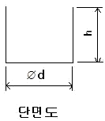
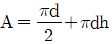
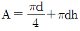
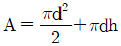
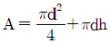
(정답률: 56%)
22. 프레스금형 조립에서 정확한 위치를 결정해주는 부품으로 옳은 것은?
- 맞춤핀
- 스톱핀
- 파일럿핀
- 녹아웃핀
(정답률: 66%)
23. 전단현상의 단계를 나타낸 것 중 옳은 것은?
- 소성→전단→파단→탄성
- 소성→탄성→전단→파단
- 파단→전단→탄성→소성
- 탄성→소성→전단→파단
(정답률: 61%)
24. 다음 중 복잡한 형상 기계적 측정이 곤란한부품 등에 적합한 측정기는?
- 투영기
- 마이크로미터
- 실린더게이지
- 버니어캘리퍼스
(정답률: 79%)
25. 프레스 부속장치 중 띠 강판을 평탄하게 교정해주는 장치는?
- 레벨러(leveler)
- 롤 피더(roll feeder)
- 다이얼 피더(dial feeder)
- 코일 크레이들(coil cradle)
(정답률: 58%)
26. 전단과정을 거쳐 절단 분리된 블랭크의 4가지 전단요소에 해당되는 것은?
- 만곡
- 시어
- 피어싱
- 거스레미(burr)
(정답률: 62%)
27. 아래 그림과 같은 V-굽힘에서 소재의 전개길이는 약 몇 mm인가? (단,보정계수 λ의 값은 0.30로 한다.)
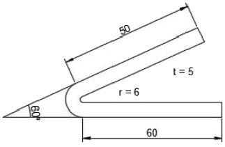
- 18
- 135
- 143
- 154
(정답률: 49%)
28. 다음중 가이드 포스트 고정법이 아닌 것은?
- 나사 고정법
- 분할 고정법
- 압입 고정법
- 데브콘 고정법
(정답률: 45%)
29. 굽힘가공에서 가공할 소재 위치결정 방법중 정밀도가 높은 제품을 성형할 경우 적합한 방법은?
- 녹 아웃장치를 이용한 위치결정
- 외곽의 양쪽을 기준으로 한 위치 결정
- 외곽의 한쪽을 기준으로 한 위치 결정
- 제품의 구멍을 기준으로 한 위치 결정
(정답률: 58%)
30. 드로잉 가공의 성형성을 나타내는 척도로 사용되는 것은?
- 두께 비
- 드로잉 률
- 드로잉 가공일량
- 드로잉 클리어런스
(정답률: 62%)
31. 소재를 펀치로부터 빼주며 펀치의 강도 보강 및 재료의 변형방지 역할을 하는 것은?
- 스톱 핀
- 스트리퍼
- 파일럿 핀
- 녹아웃 장치
(정답률: 59%)
32. 대량생산을 할 경우 후방압출의 단면 변형률의 한계는 일반적으로 약 몇 %인가?
- 65
- 75
- 85
- 95
(정답률: 60%)
33. 프로그래시브 금형의 특징으로 틀린 것은?
- 상대적 치수 정밀도의 한계가 있다.
- 설계변경에 대한 대응 범위가 제한된다.
- 버(burr)방향이 지정된 제품은 구조가 간단해진다.
- 재료의 자동공급,자동취출로 여러 대의 기계관리가 가능하다.
(정답률: 56%)
34. 전단금형에서 펀치나 다이에 전단 각을 부여하는 주된 이유는?
- 전단력을 줄이기 위하여
- 펀치와 다이를 보호하기 위하여
- 전단면을 아름답게 하기 위하여
- 다이에 대한 펀치의 편심을 방지하기 위하여
(정답률: 51%)
35. 머시닝센터에서 공구경 우측보정을 지령하는 준비기능은?
- G40
- G41
- G42
- G43
(정답률: 67%)
36. 드릴 작업을 할 때 주철과 같이 칩이 짧게 끊어지는 경우의 지그 부시와 일감과의 적합한 간격은?
- 부시 안지름의 1/2
- 부시 안지름의 1/3
- 부시 안지름의 1/4
- 부시 안지름의 1/5
(정답률: 56%)
37. 펀치와 다이를 동시에 만들 수 있는 공작기계는?
- CNC 선반
- 만능 밀링머신
- 초음파 가공기
- 와이어 컷 방전 가공기
(정답률: 59%)
38. 아래 그림과 같이 공작물을 지그(jig)의 두면 사이에 고정시켜서 가공하는 지그는?
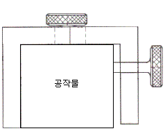
- 리프지그
- 박스지그
- 채널지그
- 템플릿 지그
(정답률: 55%)
39. 계통적으로 발생되는 측정오차 중 측정기의 제작기술 구조, 마찰, 마모, 기계적 변형, 기하학적 문제, 비선형 성분 등에 의해 발생되는 오차는?
- 과실 오차
- 개인 오차
- 계기오차
- 환경오차
(정답률: 69%)
40. 지름25mm의 연강봉을 선반에서 절삭할 때 주축의 회전수를 100mm이라 하면 절삭속도는 약 얼마인가?
- 7.85m/min
- 15.75m/min
- 30.85m/min
- 25.35m/min
(정답률: 54%)
3과목: 임의구분
41. 비절삭 가공에 의한 금형의 제작방법으로 틀린 것은?
- 방전가공에 의한 방법
- 콘터머신에 의한 방법
- 레이저에 의한 방법
- 초음파 가공에 의한 방법
(정답률: 66%)
42. 아래와 같이 블랭킹가공을 한 제품에서 전단면은?
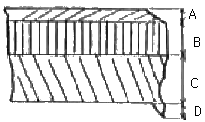
- A
- B
- C
- D
(정답률: 69%)
43. 사출금형에서 이젝터 핀이 하는 역할은?
- 성형품을 안전하게 잡아주는 기능
- 성형품을 금형 밖으로 빼내주는 기능
- 성형품의 찌그러짐을 방지해주는 기능
- 성형품의 변형을 방지하기 위해 지지해주는 기능
(정답률: 65%)
44. 열간 성형하는 다이캐스팅 및 단조금형의 금긋기 작업중 주의사항으로 거리가 먼 것은?
- 수축 여유
- 빼내기 구배
- 기계가공 정도
- 금형도면과 제품도
(정답률: 46%)
45. 분할대를 이용하여 원주를 9등분 하고자 한다. 브라운 샤프형의 27구멍 분할판을 사용하여 단식 분할을 할 때 옳은 것은?
- 3회전하고 7구멍씩 전진 시킨다.
- 3회전하고 9구멍씩 전진 시킨다.
- 4회전하고 3구멍씩 전진 시킨다.
- 4회전하고 12구멍씩 전진 시킨다.
(정답률: 46%)
46. 드릴가공,단조가공,주조가공 등에 의하여 이미 뚫어져 있는 구멍을 크게 확대하여 가공하는 방법은?
- 보링
- 사포링
- 다이캐스팅
- 와이어믹싱
(정답률: 83%)
47. 금형가공에서 일감을 고정하는 바이스의 크기를 나타내는 것은?
- 바이스의 높이
- 바이스의 무게
- 바이스 조의 폭
- 가로×세로×높이
(정답률: 63%)
48. 사출금형에서 성형품 내부에 기포가 생기는 것을 방지하기 위한 방법으로 옳은 것은?
- 금형 온도를 낮게 한다.
- 사출 속도를 빠르게 한다.
- 캐비티내의 공기 배기를 충분히 한다.
- 게이트,러너,스프루의 단면적을 작게 한다.
(정답률: 65%)
49. 선반작업을 할 때 안전에 대한 주의사항으로 가장 거리가 먼 것은?
- 선반작업 전에 반드시 척 핸들을 뺀다.
- 바이트 자루를 가능한 한 길게 물린다.
- 긴 칩은 금속 갈퀴를 사용하여 제거한다.
- 기어변환은 반드시 기계의 정지후에 한다.
(정답률: 79%)
50. 강의 표면경화 열처리에 속하지 않는 것은?
- 질화법
- 침탄법
- 고체 분말법
- 고주파 경화법
(정답률: 67%)
51. 다음 그림에서 A~D에 관한 설명으로 가장 옳은 것은?
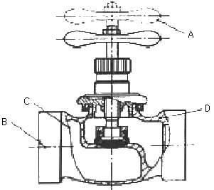
- 선A는 물체의 이동 한계의 위치를 나타낸다.
- 선B는 도형의 숨은 부분을 나타낸다.
- 선C는 대상의 앞쪽 형상을 가상으로 나타낸다.
- 선D는 대상이 평면임을 나타낸다.
(정답률: 68%)
52. 지정넓이 160mm×100mm에서 평면도 허용값이 0.02mm인 것을 옳게 나타낸 것은?(오류 신고가 접수된 문제입니다. 반드시 정답과 해설을 확인하시기 바랍니다.)
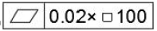
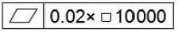
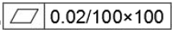
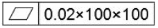
(정답률: 62%)
53. KS기계제도에서 도면에 기입된 길이 치수는 단위를 표시하지 않으나 실제 단위는?
- um
- cm
- mm
- m
(정답률: 82%)
54. 그림의 조립도에서 부품 가. 의 기능과 조립 및 가공을 고려할 때,가장 적합하게 투상된 부품도는?
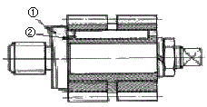
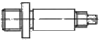
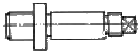
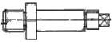
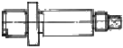
(정답률: 49%)
55. 나사 표식 기호가 Tr10×2로 표시된 경우 이는 어떤 나사인가?
- 미터 사다리꼴 나사
- 미니추어 나사
- 관용 테이퍼 암나사
- 유니파이 가는 나사
(정답률: 71%)
56. 대칭형인 대상물을 외형도의 절반과 온단면도의 절반을 조합하여 표시한 단면도는?
- 계단 단면도
- 한쪽 단면도
- 부분 단면도
- 회전 도시 단면도
(정답률: 66%)
57. 축과 구멍의 끼워 맞춤 도시기호를 옳게 나타낸 것은?
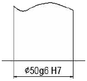
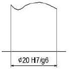
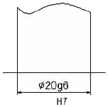
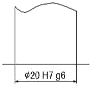
(정답률: 68%)
58. 그림과 같은 정투상도에서 제3각법으로 나타낼 때 평면도로 가장 옳은 것은?
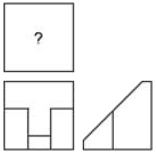
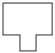
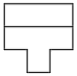
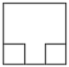
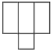
(정답률: 52%)
59. 일반적으로 무하중 상태에서 그리는 스프링이 아닌 것은?
- 겹판 스프링
- 코일 스프링
- 벌류트 스프링
- 스파이럴 스프링
(정답률: 51%)
60. 그림과 같은 표면의 결 도시기호의 설명으로 옳은 것은?
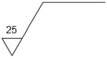
- 10점 평균 거칠기 하한값이 25um 인 표면
- 10점 평균 거칠기 상한값이 25um 인 표면
- 산술 평균 거칠기 하한값이 25um 인 표면
- 산술 평균 거칠기 상한값이 25um 인 표면
(정답률: 59%)